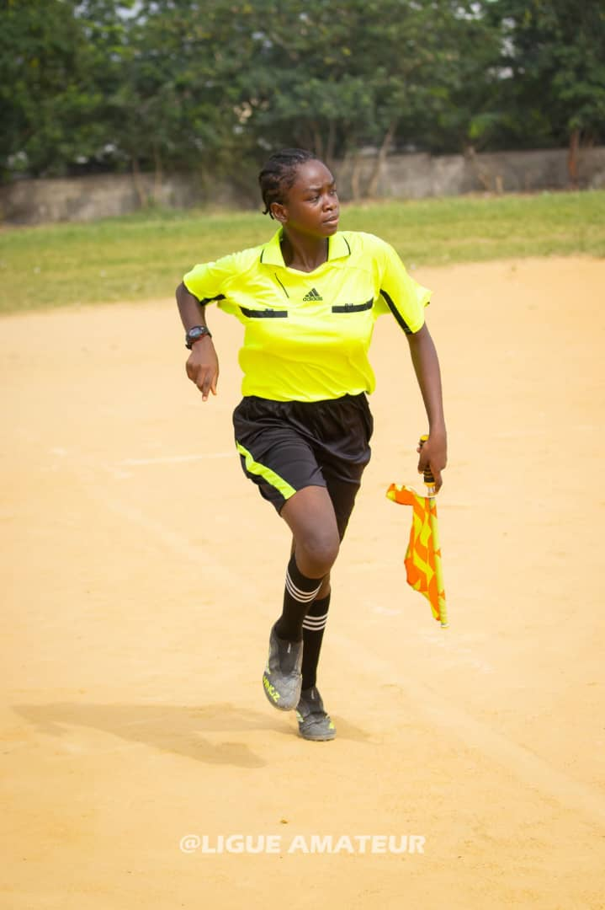
En tenue d'arbitre
Ligue Départementale du Football du Wouri (LDFW)
Désignée arbitre pour diriger les rencontres de la Ligue Départementale du Football du Wouri, ainsi que les matchs amicaux et championnats associés.

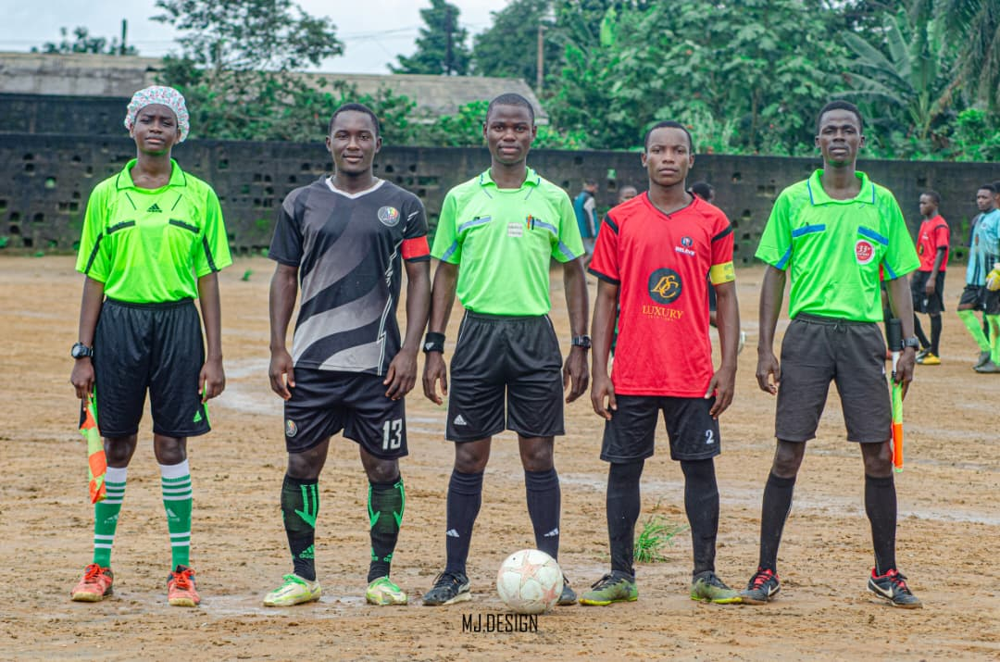


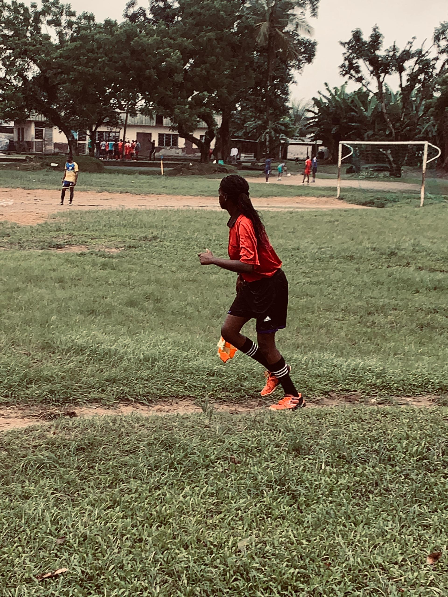

CHAMPIONNAT D'ELITE U-17 FECAFOOT/FIFA TDS de la zone Littoral-Sud-Ouest
Sélectionnée parmi les arbitres pour diriger les rencontres du CHAMPIONNAT D'ELITE U-17 FECAFOOT/FIFA TDS de la zone Littoral / Sud-Ouest
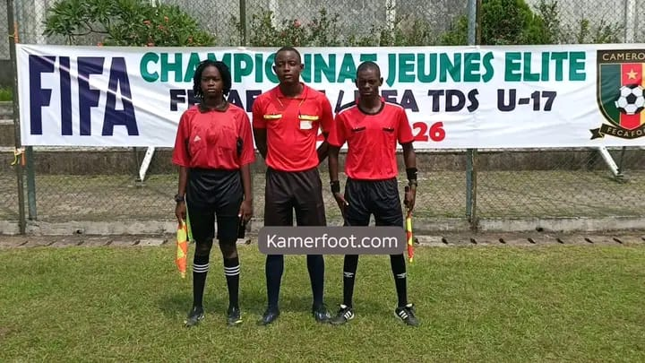
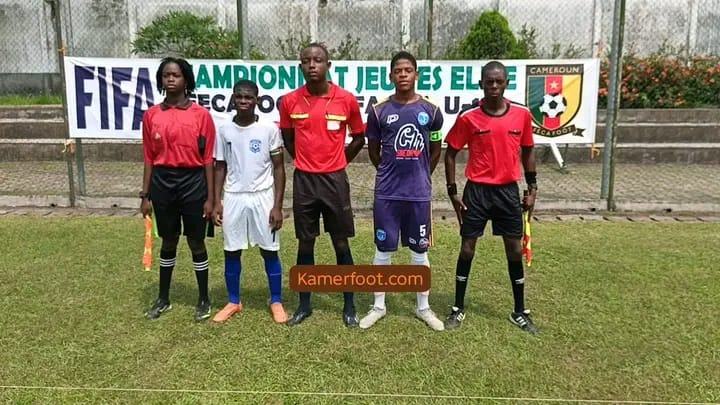
Tournoi International de Limbé (EFBC)
Arbitre du Tournoi International de Limbe qui a eu lieu a Limbé 14 au 19 décembre 2025 organisé par les Brasseries du Cameroun.
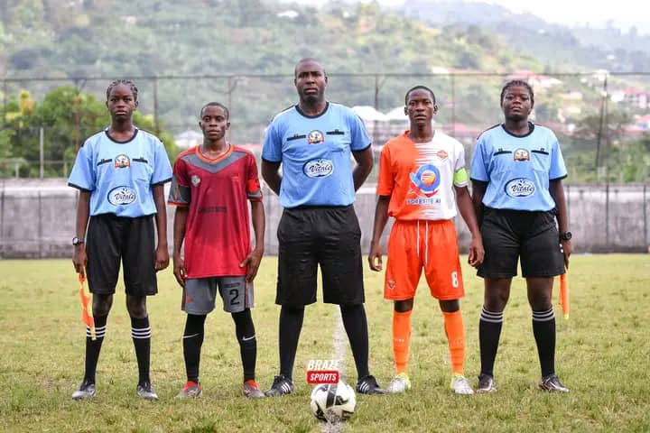
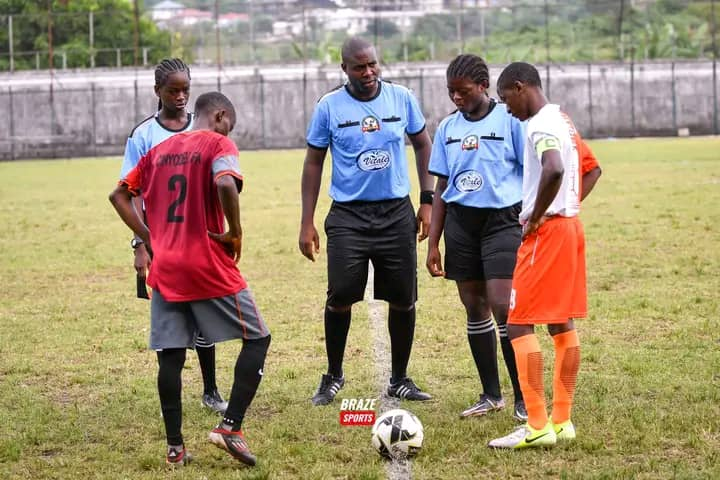
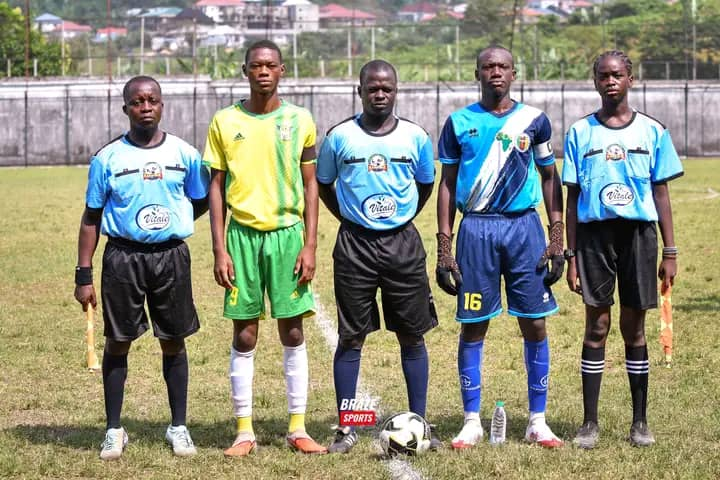
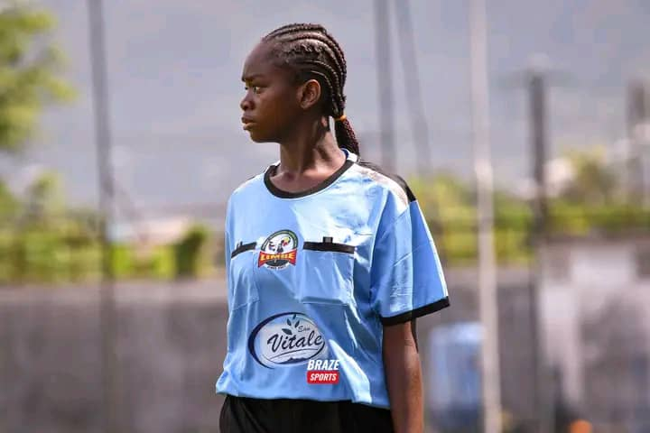

Tournoi Jean-Pierre Njib
Désignée arbitre pour le tournoi Jean-Pierre Njib organisé au complexe de l'EFBC.

World Cola Football Challenge 2026
Arbitre du championnat World Cola Football Challenge 2026, sur les terrains du Complexe EFBC pour les U-15 et du Stade annexe de Bépanda pour les U-17.
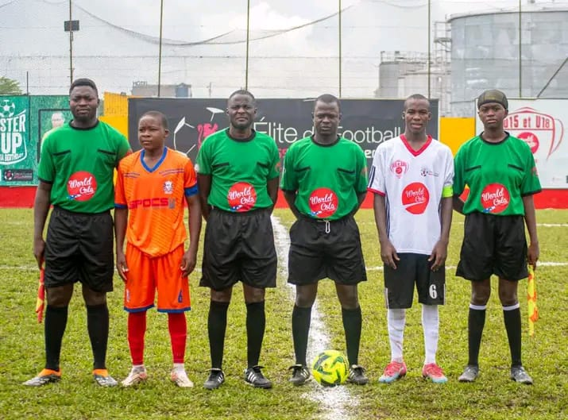
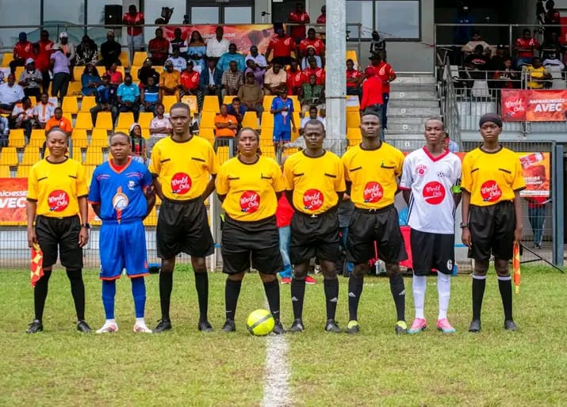
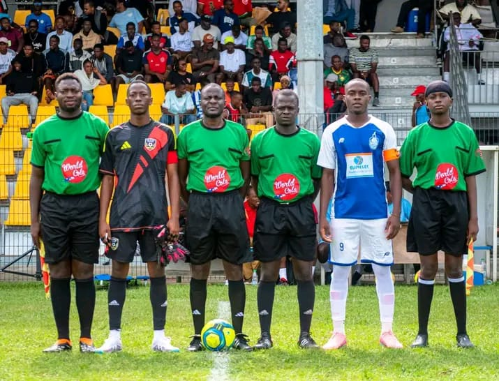
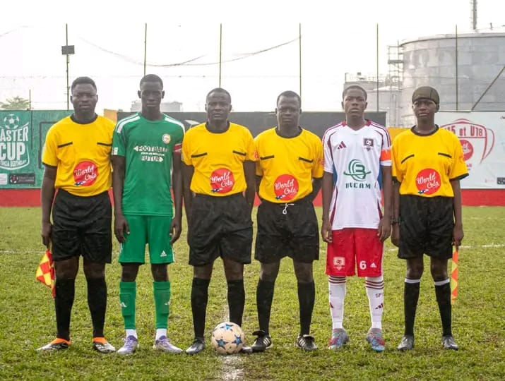